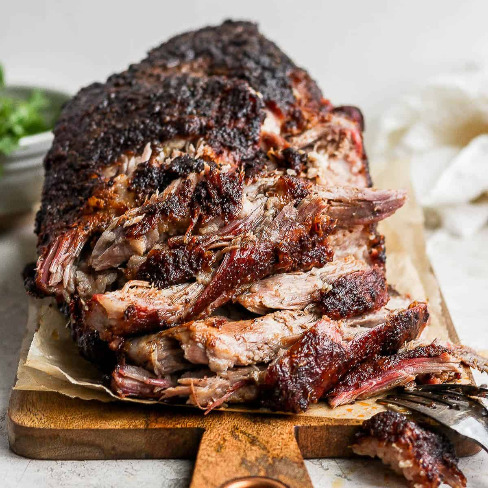

Pork Shoulder

Description
Smoked Pork Shoulder is a BBQ favorite. It can be served on its own individually
or pulled and put on a sandwich.
Ingredients
- 8 lb. pork shoulder butt
- 1/4 cup Famous Dave's Rib Rub
- Enough smoking wood to run your smoker at 275 degrees F for ~12 hours
Steps
- Rub the Rib Rub onto the pork shoulder butt
- Smoke at 275 degrees F until internal temperature reads 202 degrees F